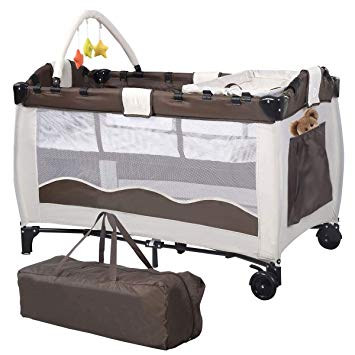

NAUJAGIMIO DRABUŽĖLIAI | Vaikui.lt
 Nėštumo planavimas Nėštumas Kūdikis Kūdikio kraitelis Kūdikio maitinimas Kūdikio priežiūra Kūdikio raida Kūdikio sveikata Kūdikis ir tėvai Laisvalaikis su kūdikiu Vaikas Vaiko mityba Vaiko priežiūra Vaiko raida Vaiko sveikata Vaiko auklėjimas Vaikų laisvalaikis Tėvai ir vaikai Daiktai ir paslaugos šeimai Kontaktai Įdomybės Įžymi mama Versli mama Mamos, kurios įkvepia Knygų apžvalga Keliauju su vaiku! Mamytės dienoraštis Deimantės dienoraštis Dovilės dienoraštis (Ne)vienintėlė mama Airida Receptai Kiaulienos receptai Jautienos receptai Vištienos receptai Žuvies receptai Sriubų receptaiNAUJAGIMIO DRABUŽĖLIAI
Daugiau straipsnių tema: Kūdikio kraitelisPrieš kūdikiui gimstant ruošiamės ne tik pačiam gimimui, bet ir ruošiame kūdikio kraitelį. Neužtenka vien tik įrengti kūdikio kambarį ir nupirkti vežimėlį, reikia ir išrinkti tinkamus ir patogius kūdikiui drabužėlius. Nors tik ką gimusiam mažyliui nereikia daug drabužėlių, bet jei viską suruošite iš anksto, sutaupysite ir laiko ir energijos, galėsite daugiau pasidžiaugti vaiko gimimu. Tai ką gi rinktis ir rengti..?
Patogumas ir natūralumas
Naujagimio rūbeliams keliami, ko gero, du svarbiausi kriterijai: pirmiausia patogumas ir natūralumas , o tik po to galime kalbėti apie madą ir stilių. Žinoma, gimus dukrytei, kiekviena mama svajoja ją puošti pūstomis suknelėmis, kurias reikia rengti per galvą, tačiau ar tai patogu? Geriausia, jei naujagimio drabužėlių kraitelyje nebus nei vieno rūbelio, kuris rengiamas būtent per galvą, labai siauro ir aptempto, storo audinio ir storomis siūlėmis. Rinkitės tik natūralius (medvilninius arba minkštos merino vilnos) drabužėlius, kurie bus malonūs kūdikiui prie kūnelio, oda gerai kvėpuos. Tokie drabužėliai nealergizuoja, nedirgina odelės gerai praleidžia deguonį, puikiai sugeria drėgmę.
Drabužėlių dydžiai
Kūdikių drabužėliai skirstomi pagal amžių naujagimiams, 3, 6 ir t.t. mėnesių kūdikiams arba pagal ūgį, pradedant nuo 50cm, 56cm, 62cm ir t.t. Stambiam vaikui gali netikti naujagimiams skirti drabužėliai, todėl jei numatomas kūdikio svoris yra 4kg ar daugiau, rinkitės 3mėn. amžiaus vaikui skirtus drabužius. Labai smulkiems ir neišnešiotiems kūdikiams yra specialūs dydžiai.
Drabužėliai
Smėlinukai (vadinamieji “bodžiukai” ) tai pats svarbiausias naujagimio ir kūdikio drabužėlis, kurio prireiks tikrai ne vieno. Naujagimiui rinkitės susiaučiamus bodžiukus, kurie užsegami knopkutėmis per šoną ir nereikia rengti per galvą. Vėliau, kai galvytė sutvirtės, galite rinktis ir per galvą rengiamus bodžiukus, bet pradžioje jie nėra itin patogūs. Taip pat pirkite kiek laisvesnius, kol kūdikio bambytė suspausta spaustuku, jei glaustinukė siaura, spaus spaustuką prie kūnelio, vaikučiui bus nemalonu.
Kelnytės geriausiai paprastos, medvilninės, “treningiuko” tipo kelnytės, kurios nespaus liemens, bus lengvai numaunamos, nespaus ir bus patogios mažyliui. Jei kelnytės per mažos, spaus vaikučiui, jei bus per didelės smuks. Taip pat jos turi būti patogiai atsegamos, kad galima būtų greitai atsegti ir patikrinti sauskelnes.
Šliaužtinukai tai vienas patogiausių naujagimio drabužėlių. Šliaužtinukai visada užsegami per visą ilgį knopkutėmis ar užtrauktuku, niekada nespaus mažyliui pilvuko, galima greitai ir patogiai aprengti ir nurengti. Tik nepamirškite, šaltesniu oru po šliaužtinuku dar aprenkite bodžiuką ir rinkitės šiltesnį šliaužtinuką, nei vienas kūdikis nemėgsta būti daug prirengtas, nes tai varžo jų judesių laisvę, tad atitinkamai pagal metų laikotarpį rinkitės ir drabužėlius, žiemą storesnius, šiltesnius, vasarą plonesnius, lengvesnius.
Kepurytės kiekvieno naujagimio kūdikio galvytės forma ir dydis skiriasi, todėl gali tikti skirtingo modelio kepurės. Kepurytės kaip ir kiti rūbeliai turi savo dydžius, kurie taip pat priklauso nuo kūdikio amžiaus ir galvytės apimties. Naujagimiams nenupirkite per didelės kepurytės, pirkite skirtą 36-38cm arba 0-1 mėn. dydžio. Svarbiausia, žiūrėkite, jog jos būtų prigludusios, bet nespaustų. Dažnai mamos renkasi užrišamas kepurytes, todėl stenkitės užrišti nei per stipriai, nei per silpnai. Jeigu kambaryje, kuriame yra naujagimis, temperatūra siekia 21-25 laipsnius, kepurytės tikrai nereikia. Įprotis naujagimį laikyti su kepuryte išlikęs iš tų laikų, kai žmonės gyveno prastai šildomose patalpose.
Kojinaitės naujagimiui dedame tik natūralios vilnos kojines, nesvarbu žiema ar vasara. Vilnonės kojinės ne tik šildo, bet ir dirgina kojų padukus, suaktyvėja kraujotaka. Nepamirškite, kad kojines patartina mauti ant nuogų pėdučių, o ant viršaus galite užmauti įprastas kojines ar tiesiog rengti viršutinį drabužėlį.
Lauko kombinezonai ir vokeliai vežimėliui tai bus reikalinga šaltuoju metų laiku ar šaltu oru. Naujagimiui bus patogesnis vientisas kombinezonas, tik vyresniems kūdikiams ir vaikams rekomenduojama atskirų dalių pašiltinta striukytė ir kelnytės. Taip pat labai patogu natūralios vilnos vokeliai į vežimą, būsit užtikrintos ir ramios, jog mažylis tikrai nesušals, nors ir spaudžia šaltukas.
Nepamirškite, nupirktus naujus vaiko drabužėlius prieš rengiant būtina išskalbti, naudokite tik kūdikiams skirtas skalbimo priemones.
Ankstesnis įrašas Sekantis įrašasRAŠYTI KOMENTARĄ Atšaukti atsakymą
Naujausi straipsniai
O KAM TĖTIS? spalio 23, 2020 MAMOS, KURIOS ĮKVEPIA! DAILININKĖ EDITA: "TIK DUKRA ĮKVĖPĖ PAIMTI TEPTUKĄ IR SUGRĮŽTI Į TAPYBOS PASAULĮ" spalio 20, 2020 NUPLIKYTI VAIKUČIAI spalio 19, 2020 KADA PRADĖTI MOKINTI KŪDIKĮ SĖSTIS? spalio 12, 2020 9 NEĮTIKĖTINI FAKTAI APIE MOTINOS PIENĄ spalio 8, 2020 EMOCINIO INTELEKTO SVARBA IR PELĖDŽIUKAI, PADEDANTYS JAM ATSISKLEISTI spalio 6, 2020 PAGRINDINĖS SERGANČIO VAIKO PRIEŽIŪROS TAISYKLĖS, KURIAS TURI ŽINOTI VISI TĖVAI rugsėjo 30, 2020 VAIKŲ PRIERAIŠUMAS IR PRIERAIŠI TĖVYSTĖ rugsėjo 29, 2020 KODĖL BLOGI VAIKAI VISADA BŪNA BERNIUKAI? rugsėjo 23, 2020 REIMA - SU ŠIAIS DRABUŽIAIS JŪSŲ VAIKAS BUS APSAUGOTAS NUO DRĖGMĖS IR ŠALČIO! rugsėjo 21, 2020Populiariausi straipsniai
VAISINGOS DIENOS. VAISINGŲ DIENŲ APSKAIČIAVIMAS STOMATITAS. KĄ REIKIA ŽINOTI? TRYS BERNIUKŲ RAIDOS STADIJOS IR TĖVŲ VAIDMUO KO NEGALIMA VALGYTI MAITINANČIOMS MAMOMS? KRAITELIS Į GIMDYMO NAMUSSekite mus
Komentarai
Labas, mazyliui 5 menesiukai BERNIUKAS LABAI STAMBUS PAGAL savo amziu.Mama amziu.Mama duoda karves pieno misinuka VALGO KAS 2 VALANDAS NAKTI prabunda 3 kartus,nes nori valgyti. Ar GALETUMETE PATARTI ka JAM DUOTI valgyti .Pienuka atpila nemazai.Aciu
Straipsnis: KŪDIKIO MITYBA PIRMAISIAIS METAIS
Pasimylėjome per menstruacijas 4diena mentstruacijų o sergu 5 dienas ovuliacija ivyks tik šia savaitę tai tikriausiai nepastojau?
Straipsnis: VAISINGOS DIENOS. VAISINGŲ DIENŲ APSKAIČIAVIMAS
Ačiū už išsamu straipsnį. Ieškojau sutrauktos informacijos apie piena, nes pajaučiau, kad ne taip jaučiuosi kai vartoju per daug pieno produktu.. ir dar kazkaip neramina dažnai sloguojantys vaikai, nors atrodo tam rimtos priežasties kaip ir nebūtu. Atsimenu kai savaitę pabandžiau atsisakyti pieno... jaučiausi tiesiog nuostabiai, padaugėjo fizinės bei protinės energijos.
Straipsnis: PIENO ŽALA SVEIKATAI
tai geriau gražus, bet mažiau naudingas?😅
Straipsnis: KOKĮ ČIULPTUKĄ PIRKTI NAUJAGIMIUI?
Nuostabus straipsnis. Ačiū!
Straipsnis: PIENO ŽALA SVEIKATAI
Tokia pati situacija..
Straipsnis: POGIMDYVINĖ DEPRESIJA
2020 Spa 23O KAM TĖTIS?
Vaiko raida Read more 2020 Spa 20MAMOS, KURIOS ĮKVEPIA! DAILININKĖ EDITA: “TIK DUKRA ĮKVĖPĖ PAIMTI TEPTUKĄ IR SUGRĮŽTI Į TAPYBOS PASAULĮ”
Mamos, kurios įkvepia Read more 2020 Spa 19NUPLIKYTI VAIKUČIAI
Vaiko sveikata Read more 2020 Spa 12KADA PRADĖTI MOKINTI KŪDIKĮ SĖSTIS?
Kūdikio raida Read more 2020 Spa 89 NEĮTIKĖTINI FAKTAI APIE MOTINOS PIENĄ
Kūdikio maitinimas Read more 2020 Spa 6EMOCINIO INTELEKTO SVARBA IR PELĖDŽIUKAI, PADEDANTYS JAM ATSISKLEISTI
Vaiko raida Read more Facebook Twitter Google+Draugai | Kontaktai
Sekite Mus Facebook
×